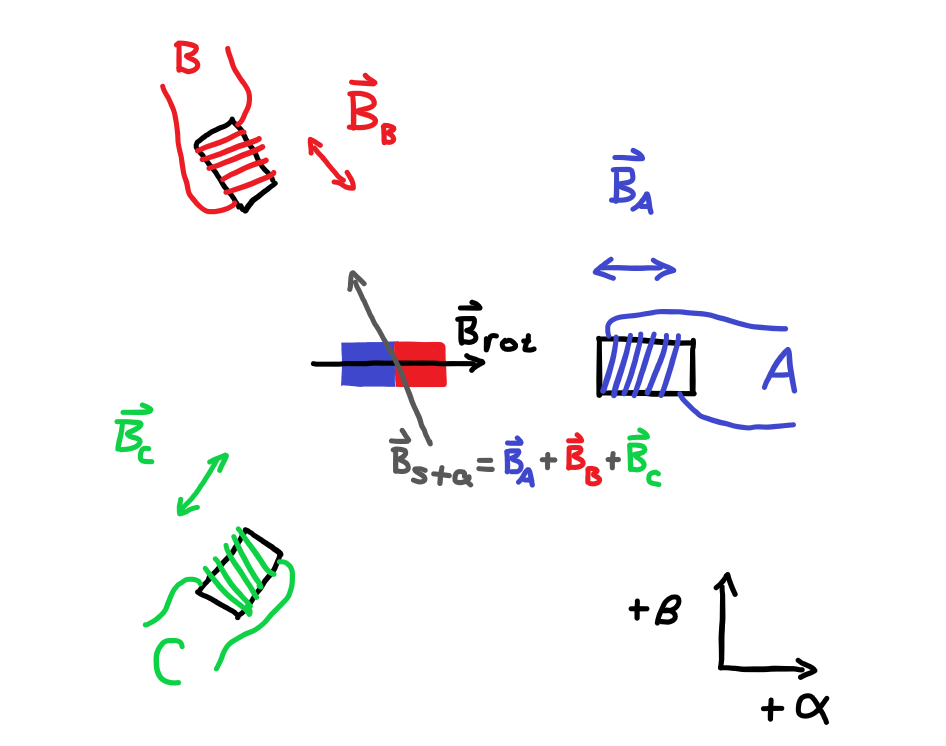
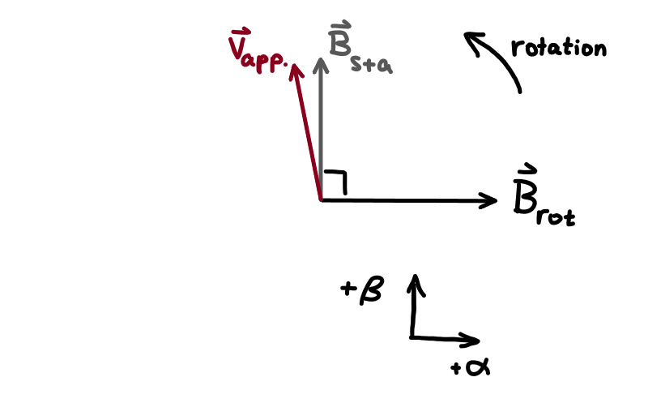
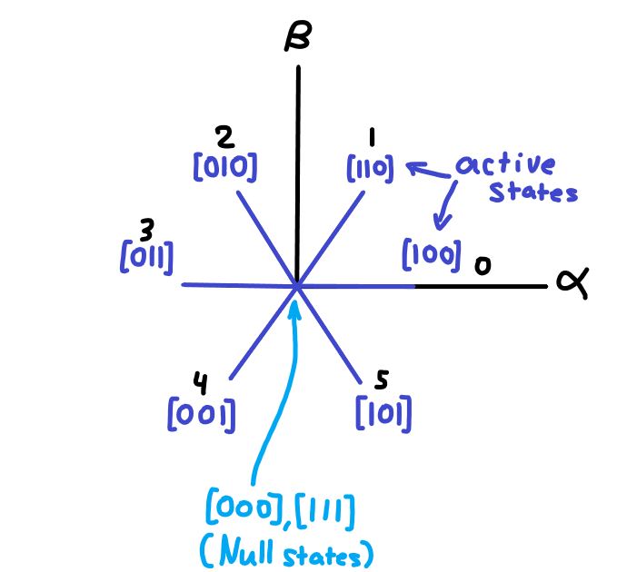

January 28, 2026
Don't mind the terrible drawings, I am drawing these in ms paint with a mouse and keyboard
Recently in a project class, we were tasked with building some kind of motor based servo actuator. It would be way easier and probably more practical to build an H bridge that drives a brushed DC motor along with an encoder and a PID loop to control the position. This would work, but I thought that it would be an interesting challenge to try to build a brushless servo controller that used Field Oriented Control (FOC).
This kind of motor has a few different names: BLDC motor, three phase brushless motor, permanent magnet synchronous motor, etc. Basically, it consists of an even number of permanant magnets attached to the rotor, and an integer multiple of three number of stator poles. These stator windings are connected in either a delta or a wye configuration, but the same controller can control both delta and wye motors.

The three phase motor can be simplified to the case of having three stator coils, and two rotor poles (one north and one south).
The permanent magnet rotor will produce a B field vector in the direction of south-north. Lets call this vector \( \vec{B_{\text{rot}}} \).
In addition, each of the coils will produce a B field vector along their axis, with a magnitude proportional to the current running through it. Lets call the superposition of these three vectors \( \vec{B_{\text{sta}}} \).
So now \( \vec{B_{\text{sta}}} \) is essentially a linear superposition of the three basis vectors which come from the physical angle of the stator coils.
To be a bit more clear, the \( \vec{B_{\text{sta}}} \) vector can be more concretely defined as the follows:
\( \vec{B_{\text{sta}}} = k I_A \hat{a} + k I_B \hat{b} + k I_C \hat{c} \)
where:
\( I_A \), \( I_B \), \( I_C \) are the phase currents
\( k \) is some constant that relates the coil current to the B field intensity at some distance (we only care about direction here so don't worry too much about this)
and unit vectors \( \hat{a} = \begin{bmatrix} 1 \\ 0 \end{bmatrix} \), \( \hat{b} = \begin{bmatrix} \frac{\sqrt{3}}{2} \\ -\frac{1}{2} \end{bmatrix} \), and \( \hat{c} = \begin{bmatrix} -\frac{\sqrt{3}}{2} \\ -\frac{1}{2} \end{bmatrix} \) in a cartesian (X, Y) space
Also, in the topic of motor control, people usually write \( \boldsymbol{\alpha} \) in place of X, and \( \boldsymbol{\beta} \) in place of Y.
I think this is a bit less confusing if you first think of all three coils as independant coils such that you can control each phase current independantly. In a real motor, these coils will be connected in a delta or wye configuration. Note that in this case, the manufacturer will ensure that the windings are wired in a way such that applying a three phase AC voltage to the coils will result in a rotating stator B field vector.

In a BLDC motor like this, there are basically three important vectors to think about.
The rotor magnetic field vector is simply the direction the rotor is pointing.
The stator magnetic field vector is the direction of the superposition of the three individual phase B fields. This is the same direction as the phase of the three line currents, so it can also be called the stator current vector.
The applied voltage vector is the phase of the applied three phase voltage. During low rotation speeds, this is almost the same direction as the stator current vector, but generally the current vector will lag the voltage vector a little bit due to the motor inductance as well as back EMF.
Magnetic force from the stator coils is will basically try to pull the rotor magnets towards the opposite pole when energized, and away from the similar pole. This basically means that the torque is proportional to the sine of the angle difference between the stator magnetic field vector, and the rotor magnetic field vector.
The main idea of FOC is to move the applied voltage vector such that the the stator magnetic field vector is always perpendicular to the rotor magnetic field vector.
This way, the controller maximises torque for a given phase current. The controller also sets the magnitude of the stator magnetic field by controlling the phase current magnitude, as well as direction.
For FOC to be possible, in most cases, a few things are required of the controller board.
I think a good place to start is with SVPWM. Basically, this is a way to set the applied phase voltage vector. Cheap hobby grade electronic speed controllers usually drive the motor with a trapezoidal signal applied to the motor phases. This basically results in six points in the +- directions of the three, phase basis vectors. This works well for driving a motor cheaply and with good power at medium to high speeds.

With trapezoidal driving, the applied voltage vector is basically just set to the active states labelled 0-5 on the diagram, and the state just increments by one until it wraps around to zero again. This is relatively easy to do, and for RC aircraft and drones this is usually sufficient. But since the vector is moving in discrete states, the torque will drop off in six points around the circle, causing a noticeable sound as well as inconsistent torque.
SVPWM basically rapidly switches between two active states with a variable duty cycle so that the on average the voltage vector is somewhere between two active states. (Actually it switches between the two adjacent active states, as well as the two null states to modulate both direction and magnitude).
This basically results in an applied voltage vector that can be pointed in any direction, and rotated smoothly. Also, a bunch of youtube videos that try to describe FOC (such as the ones by "GreatScott", "Electronoobs", "I Got Distracted", and probably others) only actually describe SVPWM without going into any actual FOC.
The actual PWM signal to do SVPWM is generally a three phase center-aligned PWM. The point in time where all three phases are all high or all low are the null states, and when the three states are not the same, this is an active state.
THIS SECTION IS UNFINISHED!
Usually the current loop only runs a PI controller without the D term. Here I am going to go through the math for specifically the D term though.
The D term usually needs a low pass filter, since a pure differentiator will amplify high frequency noise infinitely, which is not good.
The low pass filter we will use is a first order IIR filter, rather similar in functionality to a simple RC low pass filter. This is to reduce the high frequency noise that the derivative amplifies. The reason we use an IIR filter is because it has a lower group delay than an FIR filter in its passband. The transfer function of such a filter is as follows:
I start with the following transfer function in continuous time, for the entire D term:
\( H(s) = \frac{K_d s}{1 + \tau s} \)
This is basically the ideal derivator (multiply by \( s \)), scaled, and combined with a first order IIR low pass filter,
Where \( \tau \) is the time constant. For an RC filter \( \tau \) would be RC.
To make this useful in practice, we need to convert it into the Z domain.
We substitute \( s = \frac{2}{T} \frac{z-1}{z+1} \) into H(s) to get H(z), where T is the sampling period.
\( H(z) = \frac{K_d \frac{2}{T} \frac{z-1}{z+1}}{\tau \frac{2}{T} \frac{z-1}{z+1} + 1} \)
Now we multiply top and bottom by (z+1)
\( H(z) = \frac{K_d \frac{2}{T} (z-1)}{\tau \frac{2}{T} (z-1) + (z+1)} = \frac{K_d \frac{2}{T} (z-1)}{z \tau \frac{2}{T} - \tau \frac{2}{T} + z + 1} = \frac{K_d \frac{2}{T} (z-1)}{z (\tau \frac{2}{T} + 1) + (1 - \tau \frac{2}{T})} = \frac{\frac{K_d \frac{2}{T}}{(\tau \frac{2}{T} + 1)} (z-1)}{z + \frac{(1 - \tau \frac{2}{T})}{(\tau \frac{2}{T} + 1)}} \)
Define some variables to make this look neater
And rewrite it as:
\( H(z) = \frac{b_0 z + b_1}{a_0 z + a_1} \)
And now we divide top and bottom by \( z \) to express everything in terms of \( z^{-1} \)
\( H(z) = \frac{b_0 + b_1 z^{-1}}{a_0 + a_1 z^{-1}} \)
And \( H(z) = \frac{Y(z)}{X(z)} \), where X(z) is defined as \( \sum_{n=-\infty}^{\infty} x[n] z^{-n} \). Y(z) is similar. The array x[n] is the input data, and y[n] is the output data.
Now a difference equation can be written:
\( H(z) = \frac{b_0 + b_1 z^{-1}}{a_0 + a_1 z^{-1}} = \frac{Y(z)}{X(z)} \)
\( X(z)(b_0 + b_1 z^{-1}) = Y(z)(a_0 + a_1 z^{-1}) \)
\( x[n] b_0 + x[n-1] b_1 = y[n] a_0 + y[n-1] a_1 \)
And then the newest output sample y[n] can be isolated trivially
\( y[n] = \frac{1}{a_0} (x[n] b_0 + x[n-1] b_1 - y[n-1] a_1) \)
And plugging the numbers in,
\( y[n] = \frac{K_d \frac{2}{T}}{(\tau \frac{2}{T} + 1)}(x[n] - x[n-1]) - \frac{1 - \tau \frac{2}{T}}{(\tau \frac{2}{T} + 1)} y[n-1] \)
\( y[n] = \frac{2 K_d}{(2 \tau + T)}(x[n] - x[n-1]) + \frac{2 \tau - T}{2 \tau + T} y[n-1] \)